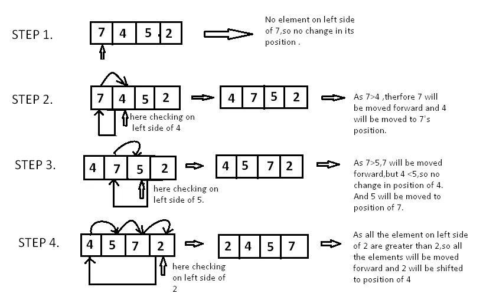

Insertion Sort Algorithm
Definition :
Insertion sort is a simple sorting algorithm that works similarly to the way you sort playing cards in your hands. The array is virtually split into a sorted and an unsorted part. Values from the unsorted part are picked and placed in the correct position in the sorted part.
Steps on how it works :
- If it is the first element, it is already sorted.
- Pick the next element.
- Compare with all the elements in sorted sub-list.
- Shift all the the elements in sorted sub-list that is greater than the value to be sorted.
- Insert the value.
- Repeat until list is sorted.

important Characteristics of Insertion Sort :
- It is efficient for smaller data sets, but very inefficient for larger lists.
- Insertion Sort is adaptive, that means it reduces its total number of steps if given a partially sorted list, hence it increases its efficiency.
- Its space complexity is less. Insertion sort requires a single additional memory space.
- Overall time complexity of Insertion sort is O(n2).